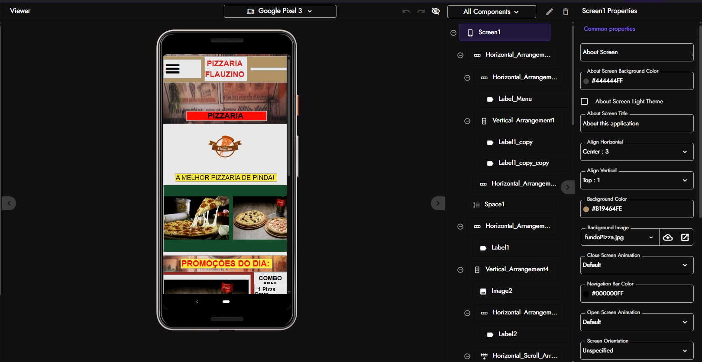
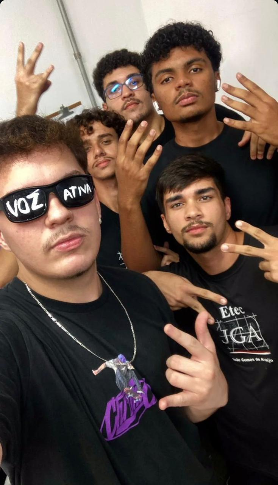

João Gabriel da Silva Vaz
Graduando em Ciência e Tecnologia
Nascimento: 02/05/2008
Email: joao.vaz@unifesp.br
Linkedin
Github
Meu nome é João Gabriel da Silva Vaz, nasci em Lorena (SP), porém
morei minha vida inteira em Pindamonhangaba. Tive a oportunidade em
que desde o ensino médio já tive contato com a área de TI no geral,
no curso Técnico de Desenvolvimento de Sistemas
da Etec de Pinda. E como um de meus projetos tive a experiência de
um Trabalho de Conclusão de Curso (TCC), desenvolvido em equipe com
mais quatro colegas, tivemos o desenvolvimento de uma plataforma web
integrada
à API da Groq para geração automatizada de blogs e imagens com
inteligência artificial, incluindo sistema de gerenciamento de
leads. Hoje resido em São José
dos Campos onde dou continuidade à minha formação acadêmica como
estudante na Unifesp.
Formação
- ETEC Pindamonhangaba
Técnico em Desenvolvimento de
Sistemas integrado ao ensino médio | 2025
- UNIFESP-São José dos Campos
Ciência e
Tecnologia-Universidade Federal de São Paulo | 2026-2029
Cursos
- Curso de Inglês | MICROCAMP
2023-2025
- Curso de React | Origamid
2024-2025
- Curso de WordPress REST API | Origamid
2024-2025
Experiências
-
Desenvolvimento de Plataforma de Geração de Blogs com
IA
Trabalho de Conclusão de Curso – ETEC Pindamonhangaba | 2025
Desenvolvimento de site integrado à API da Groq para geração
automatizada de blogs e imagens com IA.

- Desenvolvimento de Aplicativos Mobile
Projetos Acadêmicos e Pessoais | 2024–2025
Criação de aplicativos utilizando Kodular e Firebase.

- Organização Estudantil – Grêmio Escolar
ETEC Pindamonhangaba | 2025
Participação na organização de iniciativas estudantis.
